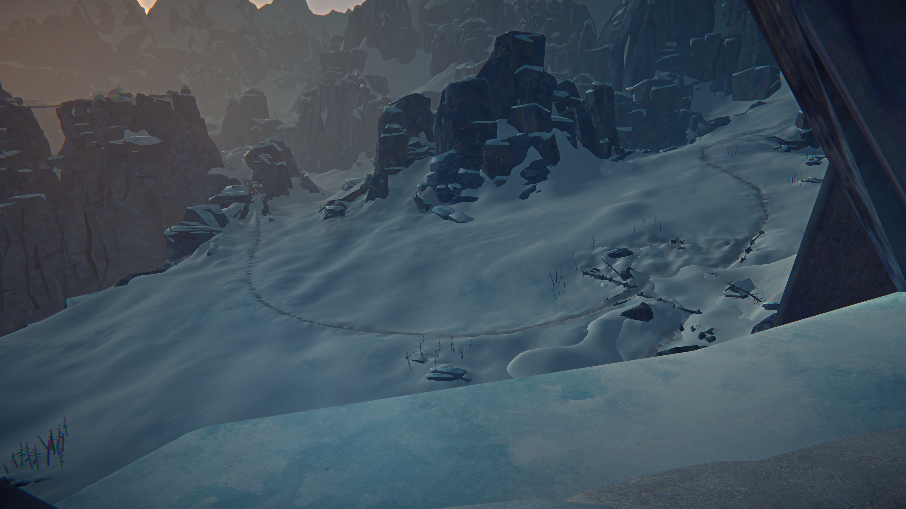
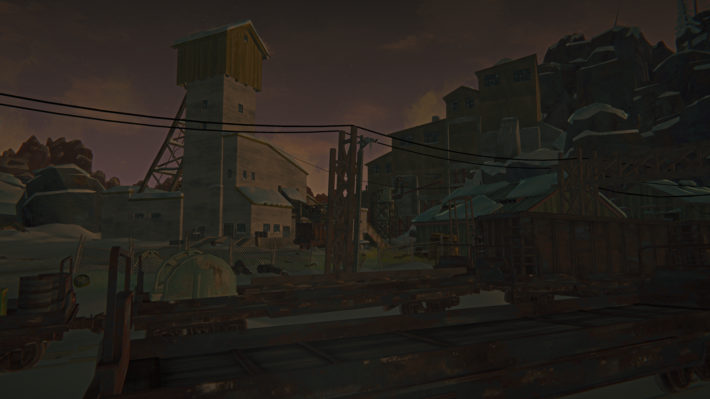
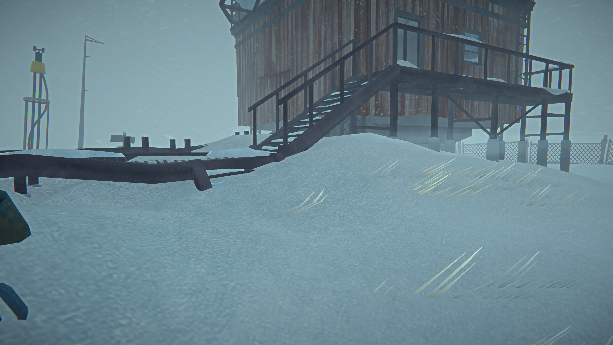
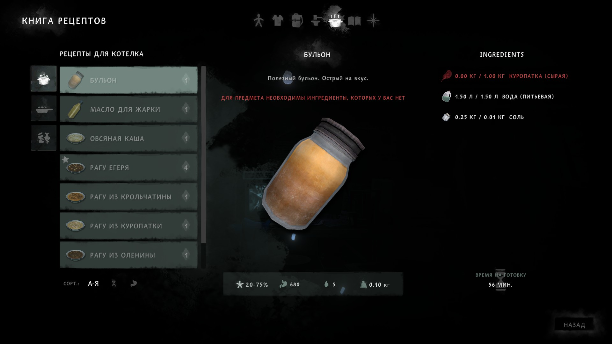

Отрезанный перевал - единственная локация, где реализована высотная поясность: в нижней части локации температуры относительно комфортные для проживания, однако высоко в горах становится в среднем на 10 градусов холоднее, также заметно редеют лес и съедобная растительность. В локации постоянно дует ветер: от него можно укрыться в низинах, но на возвышенностях он приносит серьёзные проблемы. Для продвинутых игроков. Когда-то это было излюбленным местом альпинистов Дальнего края, но теперь в этом районе почти никого не встретишь из-за постоянных лавин.
